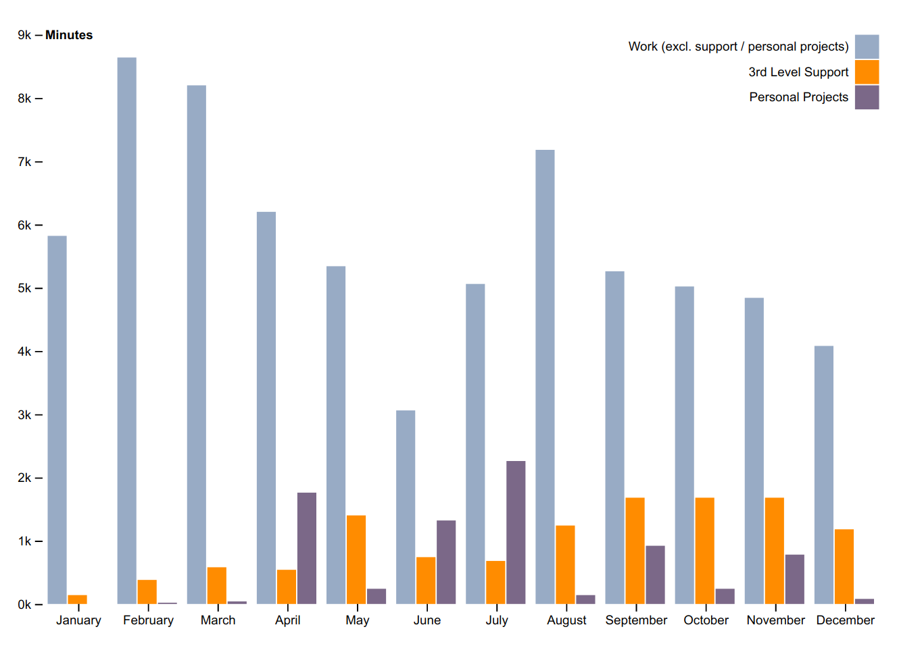

(map reflect shtuff)
=> ramblings by Ahmad Nazir
2016 had gone by in a flash. By the end of it, I was trying to figure out what the hell did I do for the whole year - I couldn’t remember squat! It was difficult to recall what had happened a few weeks back, let alone what happened months ago.
It was perfect timing for a new year’s resolution - maintain a log of how I spend my time.
I needed something that could blend into my workflow instead of being a distraction. The requirements were simple:
Being a long Emacs user, I went with the obvious choice - Org journal.
Here is how it looks after a full year of tracking my activities:

Not surprisingly, I can see that during the months where I have been busy with support, I haven’t been able to spend much time on other activities such as feature development, bug fixes, etc.
In case you are interested how I crunched the data, I have been working on a simple library using Clojure that reads the journal files, extracts the time summaries and calculates total times. You can check it out here: org-clock-stats.